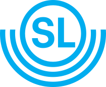

Planera varje resa i Mälardalen.
MovingoPlanner är en modern reseplanerare som söker resor mellan Sveriges trafikregioner och är optimerad för Movingo-zonen. SL, UL och Mälartåg i en och samma sökning.
Hämta appen Se hur det fungerarMovingoPlanner är en modern reseplanerare som söker resor mellan Sveriges trafikregioner och är optimerad för Movingo-zonen. SL, UL och Mälartåg i en och samma sökning.
Hämta appen Se hur det fungerar
Planera en resa som startar i en trafikregion och slutar i en annan, utan att växla mellan separata appar.
Välj när du behöver vara framme och se resor som tar dig dit i tid, inte bara nästa avgång.
Byt sortering med ett tryck. Ta den snabbaste resan, eller den lugnaste med minst antal byten.
Öppna en resa för att se varje tåg och buss med avgångs- och ankomsttider, plus promenaderna emellan.
Kolla aktuellt trafikläge direkt från startsidan innan du går hemifrån.
Utforska kartan och spara dina vanliga resor så att pendlingen alltid ligger ett tryck bort.
Din nästa resa i Mälardalen är en sökning bort.
Hämta MovingoPlanner